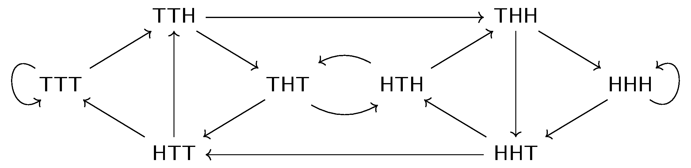
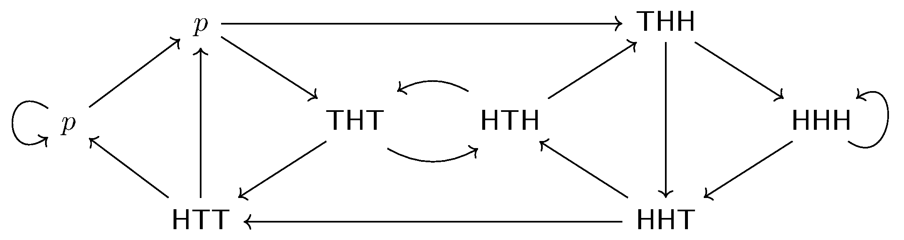
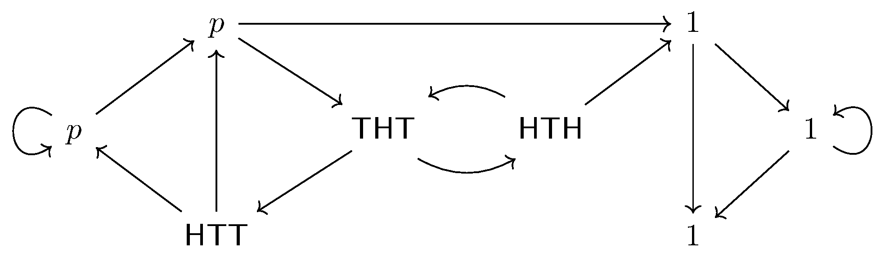
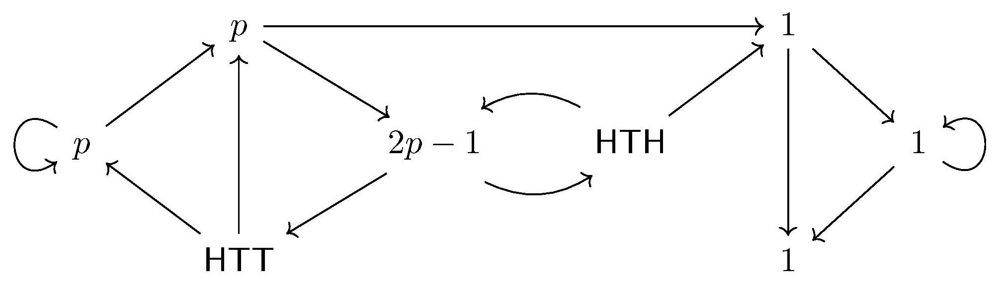
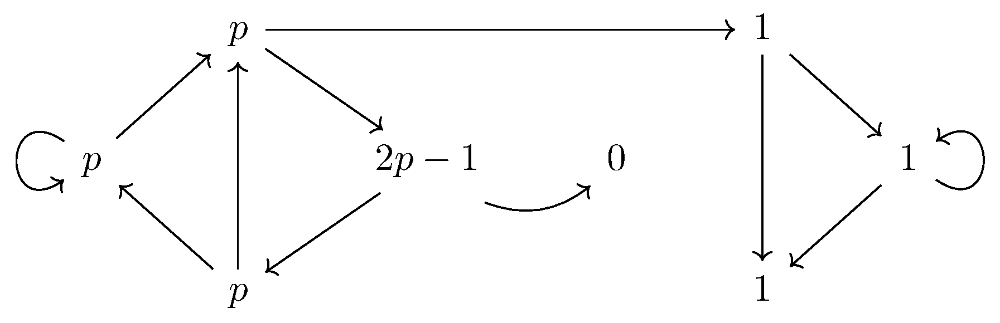
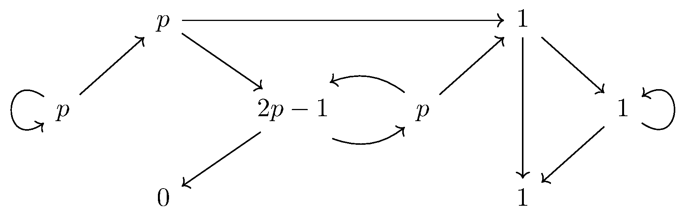

May 5th
Today I learned the proof of Penney's nontransitive coin-flipping game. The game is as follows: the first player chooses some ordered triple of heads and tails, and then the second player analogously chooses a different triple. Then a coin is flipped until the last three flips matches the triple of one the players' triples, in which event that player wins. Note that the game terminates with probably $1$ because any random triple fails to match with probability $1-\frac18-\frac18 \lt 1,$ so someone will win eventually.
It turns out that no matter what the first player chooses, the second player can always select a triple that wins out over the first player. By symmetry, we can flip $\texttt{H}\leftrightarrow\texttt{T}$ to guarantee the first coin of player one is $\texttt{H},$ meaning we have to account for $\texttt{HHH}$, $\texttt{HHT}$, $\texttt{HTH}$, and $\texttt{HTT}.$ We begin with some easy cases.
Lemma. If the first player chooses $\texttt{HHH},$ then the second player can choose $\texttt{THH}$ to win.
We have two cases.
-
Note that $\frac18$ of the time, the opening triple is $\texttt{HHH},$ in which case player two loses.
-
Otherwise, we claim that player two wins. Indeed, there is a tails sometime in the first $3$ flips, and the existence of a tail implies that player one cannot win: find the first instance of $\texttt{HHH}$ in the series of coin flips, and then we see this group of $\texttt{HHH}$ was proceeded by a $\texttt{T},$ meaning that $\texttt{THH}$ beat $\texttt{HHH}.$
Thus, we see that player two wins with probability $\frac78 \gt \frac12.$ We briefly remark that this is optimal because we can never avoid the chance that the first player just happens on the best sequence to start. $\blacksquare$
Lemma. If the first player chooses $\texttt{HHT},$ then the second player can choose $\texttt{THH}$ to win.
Again, we have two cases.
-
If the first two flips happen to be $\texttt{HH},$ then player two loses. Indeed, player two needs a $\texttt{T}$ sometime to find a $\texttt{THH},$ but the first time a $\texttt{T}$ appears, it will be proceeded by at least two $\texttt{H},$ implying that $\texttt{HHT}$ beat $\texttt{THH}.$
-
Otherwise, we claim that player two wins. Indeed, there is a tails sometime in the first two flips, and for $\texttt{HHT}$ to win, we need to see a $\texttt{HH}$ sometime in the sequence. But this $\texttt{HH}$ is not at the beginning, and so the first $\texttt{HH}$ is preceded by a $\texttt{T},$ implying $\texttt{THH}$ beat $\texttt{HHT}.$
It follows player two wins with probability $\frac34 \gt \frac12$ and so usually wins. $\blacksquare$
It remains to deal with $\texttt{HTH}$ and $\texttt{HTT}.$ For this, we introduce the following state diagram.

The arrows denote a movement with probability $\frac12.$ We will claim that $\texttt{HHT}$ beats both of $\texttt{HTH}$ and $\texttt{HTT},$ so because everything involved starts with $\texttt{T},$ we note that we can imagine starting the sequence with $\texttt{TTT}$ and then append to it.
We can start filling out some of the diagram, placing on each node the probability player two wins starting there. We are interested in the probability that player two wins starting at $\texttt{TTT},$ which we call $p.$ Then $\texttt{TTT}$ either travels to itself or travels to $\texttt{TTH},$ so we will end up in $\texttt{TTH}$ with probability $1.$ Filling in these probabilities, so far we have the following.

Now, we will be claiming that $\texttt{HHT}$ is our winner, so starting there wins with a probability $1$ (and feeds nowhere). But the note that $\texttt{HHH}$ doesn't have any outlet except into $\texttt{HHT},$ so hitting $\texttt{HHT}$ means player two win with probability $1.$ And similarly, $\texttt{THH}$ doesn't have any outlets except into the winning states $\texttt{HHH}$ and $\texttt{HHT},$ so it also wins with probability $1.$

Because one of $\texttt{HTH}$ or $\texttt{HTT}$ will player one winning and so player two losing in our analysis, those will become $0$ in the lemmas that follow. So the last block we can fill in, for now, is $\texttt{THT}.$ For this, we note that $\texttt{TTH}$ in the top-left splits into $1$ with probability $\frac12$ and into $\texttt{THT}$ with probability $\frac12,$ so $p$ is the average of $\texttt{THT}$'s probability and $1.$ So $\texttt{THT}$'s probability is $2p-1.$

Now we move into our concrete cases.
Lemma. If the first player chooses $\texttt{HTH},$ then the second player can choose $\texttt{HHT}$ to win.
We have already filled in a lot of our state diagram. Note that starting at $\texttt{HTH}$ now gives probability $0$ of winning (and feeds nowhere), but $\texttt{HTT}$ is just another state which can only feed into the probability-$p$ states $\texttt{TTT}$ and $\texttt{TTH}.$ So our diagram is as follows.

Now, we see that $2p-1$ feeds into a $0$ with probability $\frac12$ and a $p$ with probabilty $\frac12,$ so\[2p-1=\frac12(0+p).\]Solving gives player two winning with probability $p=\frac23 \gt \frac12.$ $\blacksquare$
Lemma. If the first player chooses $\texttt{HTT},$ then the second player can (still) choose $\texttt{HHT}$ to win.
Again, a lot of our state diagram is already filled in above. This time the probability at $\texttt{HTT}$ is $0$ and feeds nowhere. But now we can evaluate the probability at $\texttt{HTH}$ as the average between its outputs $2p-1$ and $1,$ which is simply $p.$ So our diagram is now the following.

But again, $2p-1$ feeds into a $0$ and a $p$ each with probability $\frac12,$ implying $2p-1=\frac12(0+p),$ so $p=\frac23 \gt \frac12$ is the probability that player two wins. $\blacksquare$
Putting everything together, we have the following table.\[\begin{array}{c|c|c} \text{player one's choice} & \text{player two's choice} & \text{player two's probability} \\\hline \texttt{HHH} & \texttt{THH} & 7/8 \\ \texttt{HHT} & \texttt{THH} & 3/4 \\ \texttt{HTH} & \texttt{HHT} & 2/3 \\ \texttt{HTT} & \texttt{HHT} & 2/3\end{array}\]Flipping the entire table tells player two what to do when player one starts with a tails.\[\begin{array}{c|c|c} \text{player one's choice} & \text{player two's choice} & \text{player two's probability} \\\hline \texttt{TTT} & \texttt{HTT} & 7/8 \\ \texttt{TTH} & \texttt{HTT} & 3/4 \\ \texttt{THT} & \texttt{TTH} & 2/3 \\ \texttt{THH} & \texttt{TTH} & 2/3\end{array}\]So indeed, player two can always arrange the game to have a better-than-even winning probability. The game is non-transitive.
Intuitively, Wikipedia explains what's going on as player one typically needs the first two flips to set up and the last to execute, but player's two choice is arranged so that its last two match up, meaning that player two will generally win before player one finishes setting up. I find this somewhat convincing because it reflects the arguments for $\texttt{HHH}$ and $\texttt{HHT}$ well, though these are the easier cases. In contrast, I can't see what's going on with $\texttt{HTT}$ or $\texttt{HTH}$ as well. The cleanest argument I have is the states diagram I presented, and it is nontrivially painful even though a lot of the work can be shared.
Anyways, what I like about this game is that it is non-transitive (of course), and it feels more natural than, say, non-transitive dice. Given my experience with contest math, asking which of two players will win in this game for fixed choices is a pretty common flavor of question.